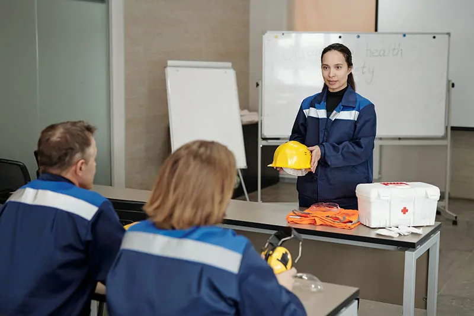

Atendimento personalizado
Cada empresa é única. Por isso, nossos serviços são adaptados à realidade, ao porte e ao segmento de cada cliente, com soluções práticas e direcionadas.
Medicina ocupacional, saúde corporativa e segurança do trabalho em um só parceiro.
Na Life Laboral, entregamos soluções completas e personalizadas em medicina ocupacional, saúde corporativa e segurança do trabalho, promovendo conformidade legal, qualidade de vida e ambientes laborais mais seguros e produtivos.
Atendemos empresas de todos os portes e segmentos com excelência técnica, agilidade e tecnologia de ponta, facilitando a gestão da saúde ocupacional e reduzindo riscos operacionais e jurídicos.
Escolha um serviço para ver o que está incluído e falar com a equipe.

Do primeiro contato à entrega dos documentos, o mesmo cuidado com a sua empresa e com as pessoas que fazem parte dela.
Cada empresa é única. Por isso, nossos serviços são adaptados à realidade, ao porte e ao segmento de cada cliente, com soluções práticas e direcionadas.
Contamos com profissionais experientes em medicina do trabalho, engenharia de segurança, ergonomia e legislação trabalhista, garantindo suporte técnico de excelência.
Priorizamos prazos curtos, comunicação clara e entrega eficiente de documentos, laudos e exames. Tudo para facilitar sua rotina e evitar gargalos operacionais.
Atualizados com as legislações vigentes, asseguramos que sua empresa esteja sempre em conformidade com as Normas Regulamentadoras, evitando multas e passivos trabalhistas.
Acreditamos que ambientes saudáveis são mais produtivos. Por isso, promovemos uma cultura de prevenção, cuidado e valorização da saúde dos colaboradores.
Com a união entre Life Laboral e Universo FX, saúde ocupacional, segurança do trabalho e capacitação profissional passam a ser contratados em um único lugar.
Fale com a nossa equipe e receba uma proposta personalizada para o porte e o segmento do seu negócio.